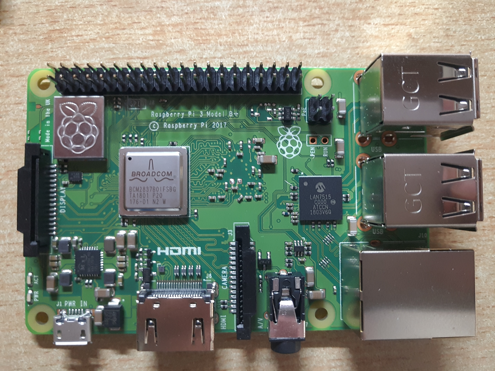

author：QINBINGJIA time：2018.06硬件：RPi3B+ 等
2018.06.13：
正等待发货
2018.06.16：
收到
2018.06.30[2018.07.05修改]：
在树莓派官网https://www.raspberrypi.org/下载Raspbian系统映像。据b站up主的提醒及之前安装失败的经验，目前其他系统似乎不支持新出的Pi3B+。
借助Win32DiskImager烧录至SD卡，注意烧录好后添加空白的SSH文件以便之后用电脑连接。具体过程参考https://blog.csdn.net/github_38111866/article/details/76038665
网线连接树莓派和笔记本，将笔记本的网络共享给树莓派。之后在Windows的cmd命令窗口输入arp -a找到树莓派的IP地址。通过Xshell连接树莓派，用户名为pi，密码为raspberry。具体过程参考https://jingyan.baidu.com/article/adc81513a267c7f723bf7384.html
修改软件源为国内软件源，文件地址为/etc/apt/sources.list。[vi编辑器进入后输入i回车即可编辑内容，按Esc后退出内容编辑，而后输入:并回车进入命令行，输入wq回车即可保存并推出vi，若输入q!则不保存直接退出。软件源地址参考网站自https://www.cnblogs.com/xiaowuyi/p/4012069.htmlvi使用方法参考自https://blog.csdn.net/xie_xiansheng/article/details/78413306][参考https://blog.csdn.net/la9998372/article/details/77886806]
安装vncserver,并开启Raspbian的VNC Server。[参考https://blog.csdn.net/lingyou37/article/details/23671687/及]https://blog.csdn.net/u012952807/article/details/70225700
完成连接。
之后进行修改时区、分辨率及相关系统美化等操作，相关的参考网址：
2018.07.10：
系统汉化。
2018.06.30：
摄像头测试，样图大小2.4M，效果尚可。摄像头设置参考http://www.mamicode.com/info-detail-2018954.html
motion视频设置：https://blog.csdn.net/u013151320/article/details/50195981 解决视频灰屏问题：http://bbs.elecfans.com/jishu_1099559_1_1.html 视频存在较大延迟；除笔记本网线直连的情况下，存在外网可访问的安全性问题。 杀死进程：sudo killall -TERM motion 启动视频程序：sudo service motion start sudo motion
2018.07.13：
相关代码为
#! /usr/bin/env python
# -*- coding: UTF-8 -*-
import smtplib
from email.mime.text import MIMEText
mailto_list=['12345678@qq.com'] #收件人(列表)
mail_host="smtp.126.com" #使用的邮箱的smtp服务器地址，这里是163的smtp地址
mail_user="xxx" #用户名
mail_pass="xxx" #密码
mail_postfix="126.com" #邮箱的后缀，网易就是163.com
def send_mail(to_list,sub,content):
me="hello"+"<"+mail_user+"@"+mail_postfix+">"
msg = MIMEText(content,_subtype='plain')
msg['Subject'] = sub
msg['From'] = me
msg['To'] = ";".join(to_list) #将收件人列表以‘；’分隔
try:
server = smtplib.SMTP()
server.connect(mail_host) #连接服务器
server.login(mail_user,mail_pass) #登录操作
server.sendmail(me, to_list, msg.as_string())
server.close()
return True
except Exception as e:
print(e)
return False
for i in range(1): #发送1封，上面的列表是几个人，这个就填几
if send_mail(mailto_list,"电话","电话是XXX"): #邮件主题和邮件内容
#这是最好写点中文，如果随便写，可能会被网易当做垃圾邮件退信
print ("done!")
else:
print ("failed!")
2018.07.13：
Python代码为
#!\usr\bin\env python
#-*-coding: utf-8-*-
import socket
import time
import smtplib
import urllib
import urllib.request
from email.mime.multipart import MIMEMultipart
from email.mime.text import MIMEText
from email.mime.image import MIMEImage
#发送邮件的基本函数，参数依次如下
# smtp服务器地址、邮箱用户名，邮箱秘密，发件人地址，收件地址（列表的方式），邮件主题，邮件html内容
def sendEmail(mail_host,mail_user,mail_pass,sender,mailto_list,subject,msghtml):
me="MRPi"+"<"+sender+">"
msg = MIMEText(msghtml,_subtype='plain')
msg['Subject'] = subject
msg['From'] = me
msg['To'] = ";".join(mailto_list) #将收件人列表以‘；’分隔
try:
server = smtplib.SMTP()
server.connect(mail_host) #连接服务器
server.login(mail_user,mail_pass) #登录操作
server.sendmail(me, mailto_list, msg.as_string())
server.close()
print (True)
except Exception as e:
print(e)
print (False)
#检查网络连通性
def check_network():
while True:
try:
page=urllib.request.urlopen('http://baidu.com')
html=page.read()
print (html)
print ("Network is Ready!")
break
except Exception as e:
print(e)
print ("Network is not ready,Sleep 5s...")
time.sleep(5)
return True
#获取本级制定接口的ip地址
def get_ip_address():
s =socket.socket(socket.AF_INET,socket.SOCK_DGRAM)
s.connect(("1.1.1.1",80))
ipaddr=s.getsockname()[0]
s.close()
return ipaddr
if __name__ == '__main__' :
check_network()
ipaddr= get_ip_address()
print (ipaddr)
sendEmail("smtp.126.com",'xxx','xxx','xxx@126.com',['12345678@qq.com'],'IP Address of Raspberry PI',ipaddr)
设置开机自启脚本：